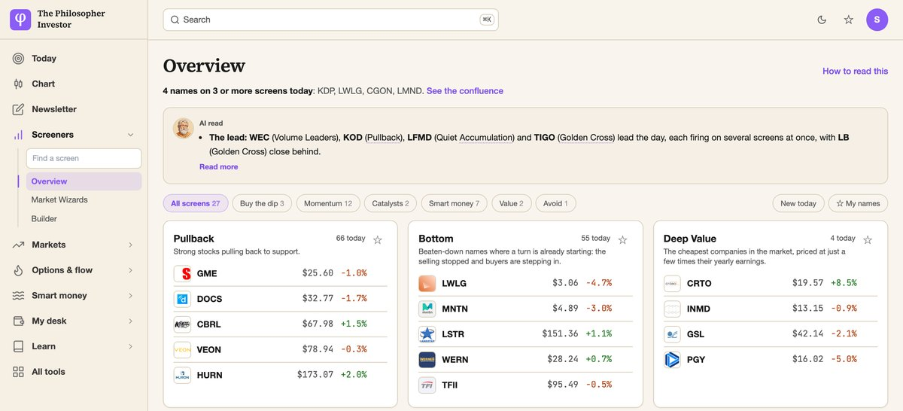
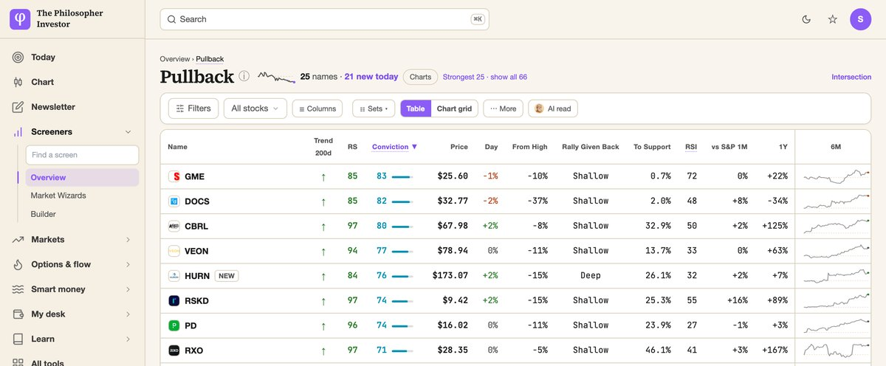

Mails de l'app aux nouveaux payants : avant / après (v10)
Règle : un mail, une action, et on s'arrête dès que le membre est actif. Un membre qui utilise déjà les Screeners reçoit 0 ou 1 mail de l'app, un membre jamais venu 2 ou 3. Inscrit par Substack : la bienvenue Substack remplace le mail du jour 0. Captures pleine fenêtre de l'app en prod, date masquée. Claude web : 8, puis 8,5, puis 9/10, puis v8 : 8,5 puis 9/10 après corrections. Rien n'est en ligne.
Reco finale (v10) : mettre en ligne cette version.
Même habillage que tes mails actuels. Texte valable tous les jours, sans ticker ni chiffre du jour. Images : vraies captures de l'app en pleine fenêtre.
Jour 0 : la courte liste, c'est-à-dire les titres sur 3 screens ou plus. Jour 2 : se connecter pour qui n'est jamais venu, ou choisir son screener pour qui est venu. Jour 6 : 2 lignes, seulement si le membre n'est jamais venu. Au plus 3 mails par membre.
Pourquoi les Screeners : 10 payants sur 18 les ouvrent, 1 sur 18 les alertes.
Concurrents. Seeking Alpha : 4 mails en 3 jours, une fonction par mail, chaque mail pousse l'abonnement Premium. TradingView : un seul mail d'accueil avec un bouton. Finlens : un mot du fondateur de 77 mots, sans image. Nous restons au plus court, une action par mail.
À coder ensuite : un membre déjà connecté qui clique un bouton arrive directement sur la bonne page. Puis un mail test pour toi, et la mise en ligne après ton OK.
Jour 0 · inscrit par l'app
Avant : un long manuel en 5 sections. Après : une seule action, ouvrir la courte liste, c'est-à-dire les titres sur 3 screens ou plus. Texte valable tous les jours.
Avant
Après
Your short list is ready
12,000+ US stocks go through our screens after every close. Start where they agree.
 | The Philosopher Investor |
You're in
Your short list is ready
Hi, Daniel here. Thanks for joining.
After every close, the app runs 12,000+ US stocks through more than 20 screens. At the top of the Screeners page you find the names that land on three screens or more at once. It is the shortest list in the app, and the best place to start.

Open the list and click one of them. Its page shows the options flow and the funds that own it.
There is no password. Enter {email} and a sign-in link arrives by email.
Daniel
P.S. Tap Follow on the names you trade. They collect in the Your names rail on your Today page.
You get this email because you joined at app.thephilosopherinvestor.com with member@example.com.
A few short emails in your first week, then they stop.
Jour 2 · jamais venu dans l'app
Inchangé depuis ta validation : un seul bouton, se connecter.
Avant
Après
Your app is ready. No password.
Enter your email and open the link. The Pullback screen is waiting.
| The Philosopher Investor |
Your app is ready
One link, no password
Hi, Daniel here. Your plan includes the full app, and this is the quickest way in.
Click below and enter {email}. Open the link that arrives and the Pullback screen is waiting: strong stocks that dipped toward support, ranked by conviction.

No link after a minute? Check spam, or reply and I will fix it.
Daniel
You get this email because you joined at app.thephilosopherinvestor.com with member@example.com.
A few short emails in your first week, then they stop.
Jour 2 · venu, Screeners jamais ouverts
Avant : répétait la bienvenue. Après : choisir son screener selon sa façon de trader. Les Screeners sont la page la plus ouverte par les payants (10 sur 18 en 30 jours).
Avant
Après
The screen that fits how you trade
Pullback if you buy dips, Breakout if you buy strength. Read the top five.
| The Philosopher Investor |
Pick your screen
Five minutes before the open
Hi, Daniel here. Screeners is the page members open most. Here is how to make it yours.
If you buy dips, open Pullback: strong stocks that pulled back to support, ranked by conviction. If you buy strength, open Breakout: stocks pushing through a key ceiling.
Read the top five names only. Each one opens a full page with the chart and the options flow.
Daniel
P.S. You trade another way? Reply with one line on how you trade and I will point you to the screen that fits.
You get this email because you joined at app.thephilosopherinvestor.com with member@example.com.
A few short emails in your first week, then they stop.
Jour 6 · toujours jamais venu
Nouveau, 2 lignes. Seulement si le payant n'a jamais ouvert l'app.
Après
Did the sign-in link work?
Reply in one line. I read every answer.
Hi, Daniel here. You joined almost a week ago and have not signed in yet.
Did the sign-in link reach you, or did something else get in the way? Reply in one line and I will sort it out.
Daniel